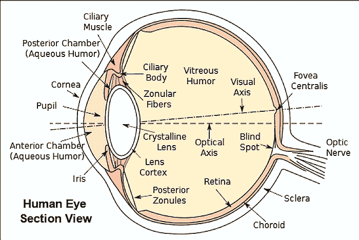
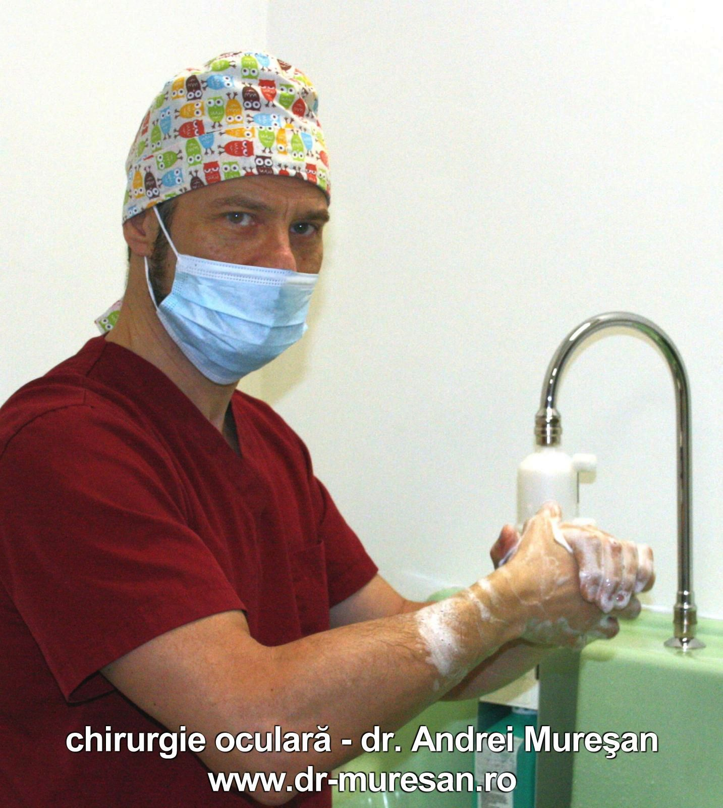

Ce este o operatie de cataracta.
Diagnostic și chirurgie
O operatie de cataracta este intervenția chirurgicală în sine. Cataracta ca afecțiune oftalmologică este o afecțiune a cristalinului și constă în opacifierea acestuia. Efectul este pierderea vederii. Până cu câteva zeci de ani în urmă, depistarea acestei boli presupunea deteriorarea semnificativă a vederii. Prin urmare, perfecționarea tehnicilor de chirurgie a cataractei și apariția implantului de cristalin artificial a oferit o vedere bună unor milioane de oameni.
Operatia de cataracta a devenit accesibilă majorității pacienților. Respectiv persoanelor diagnosticate cu cataracta care doresc să vadă cât mai bine. Să vedem în detaliu ce înseamnă afecțiunea, cum se manifestă și cum se tratează.

Descrierea afecțiunii și cum clasificam cataracta
Ochiul uman este oarecum asemănător cu un aparat de fotografiat sau o cameră de filmat. Însă complexitatea și performanța ochiului depășește cu mult pe cea a dispozitivelor electronice. În ochi are loc un grad de prelucrare a informației care va fi transmisă creierului. În partea din față a ochiului, în axul optic se află un organ de formă eliptică, cristalinul. Acesta este o lentilă biconvexă prin intermediul căreia lumina este focalizată pe retină.
Acest cristalin posedă într-adevăr calități excepționale, iar îmbolnăvirea lui, respectiv pierderea elasticității sau a transparenței, produce efecte care necesită corecții cu ochelari sau chiar încețoșarea vederii până la dispariția acesteia.
Așadar cataracta, boala, însemnând opacifierea cristalinului, va duce la pierderea vederii dacă nu procedăm la eliminarea ei prin intervenție chirurgicală.
Apariția și clasificarea cataractei
În general cataracta apare după 60 de ani, dar aparitia bolii nu este deloc neobișnuită și la vârste mai tinere. Avem de-a face cu cateva tipuri ale afecțiunii.
- Cataracta senilă – care se datorează îmbătrânirii este cea mai frecventă și în general ne așteptăm să apară spre perioada vârstei a treia;
- Congenitală – la naștere sau în primii ani de viață;
- Cataracta traumatică – se datorează unor leziuni sau accidente;
- Patologică – apare în diabet, alte boli mai rare sau unele medicamente;
- Secundară -poate să apară consecutiv operatiei de cataractă, într-un procent de 10-15% din cazuri.
Cataracta este cea mai frecventă cauză a pierderii reversibile a vederii și de cele mai multe ori se manifestă asimetric. Este o afecțiune ce se dezvoltă treptat, silențios, nu este dureroasă și se instalează, cum am spus, mai întâi la un ochi, urmând ca celălalt să-l urmeze în scurt timp.

Simptomele cataractei
Cea mai obișnuită formă de manifestare este vederea tulbure (încețoșată). O manifestare căreia (din păcate) nu i se acordă foarte multă atenție în stadiile inițiale Aceasta, reducerea vederii, este cea mai frecventă formă de manifestare.
Alte forme de manifestare a începutului de cataracta:
- vederea cu halouri în jurul surselor de lumină;
- oboseala și iritarea la sursele luminoase;
- vederea cu dubluri (diplopia monoculară);
- discromatopsia respectiv pierderea intensității culorilor, acestea devin șterse, palide.
- creșterea accentuată a miopiei
Un semn care poate fi înșelător este „senzaționala” revenire a vederii. Pacientul poate vedea și poate citi „dintr-odată” fără ochelari! Explicația este relativ simplă. Apărând miopia, aceasta anulează presbiopia dacă este instalată deja. Efectul este de scurtă durată, boala va avansa iremediabil.
Diagnosticul de cataracta
Diagnosticul cataractei se face în mod exclusiv de către oftalmolog. Acesta, prin examinările specifice ale globului ocular, poate face diferența între afecțiuni ale corneei sau retinei care au, maimult sau mai puțin, aceeași simptomatologie.
Medicul va examina vederea de aproape și de departe, va măsura tensiunea intraoculară, respectiv prin tonometrie și va efectua celelalte măsurători necesare – biometria. Apoi va recomanda cel mai potrivit implant de cristalin pentru pacientul respectiv.
De reținut că pentru cataractă nu există tablete, ceaiuri sau medicamente minune, așa cum propovăduiesc unii „specialiști” pe internet. Singurul remediu este operatia de cataracta, al carei succes este cu atat mai mare cu cât boala este depistată mai devreme.